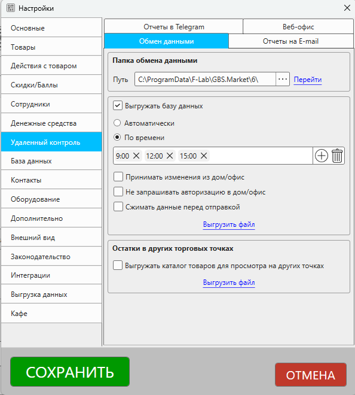
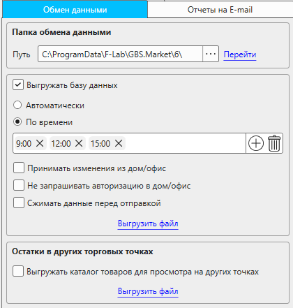
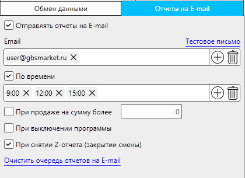
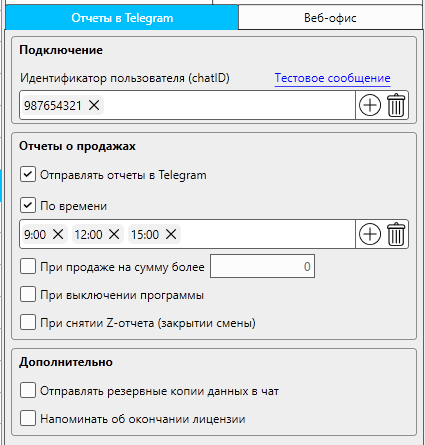
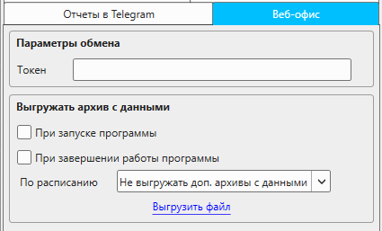

Описание раздела настроек "Удаленный контроль", где можно настроить параметры удаленного контроля и облачной синхронизации.
Чтобы открыть эти настройки:
- в главной окне программы в меню нажмите Файл - Настройки
- перейдите в раздел "Удаленный контроль"

В разделе настроек "Удаленный контроль" доступны вкладки:
- Обмен данными
- Отчеты на E-mail
- Отчеты в Telegram
- Веб-офис
Обмен данными
Вкладка, содержащая настройки для управления параметрами облачной синхронизации

Папка обмена данными
Путь
Путь к папке, которая используется для синхронизации, например, через облачное хранилище.
В указанную папку выгружаются:
- Данные для режима "дом\офис"
- Информация для перемещения товаров между торговыми точками
- Файл обмена данными о покупателях
- Обмен данными для каталога товаров
Выгрузка базы данных
Выгружать базу данных
Включение выгрузки данных в папку обмена данных.
Необходимо для:
- Синхронизации с "дом\офис"
- Перемещения товаров между торговыми точками
- Обменом данными о покупателях между торговыми точками
- Обмен данными для поиска товаров из других торговых точек
Полезные материалы
Автоматически
Если опция включена, то данные будут выгружаться автоматически при следующих событиях:
- Создание документа (продажа и поступление)
- Создание снятия и внесения денежных средств
По времени
Выгрузка данных будет происходить в указанные периоды времени при условии, что программа в эти промежутки запущена. Добавьте периоды времени, когда должна происходить выгрузка данных.
Принимать изменения из "дом/офис"
Если опция включена, то из режима "дом/офис" можно будет вносить изменения в базу данных данной торговой точки.
Важно
Из режима "дом/офис" доступны для редактирования не все данные!
Полезные материалы
Не запрашивать авторизацию в "дом/офис"
Если опция включена, то в режиме "дом/офис" не будет запрашиваться авторизация при открытии базы текущий торговой точки.
Если опция выключена, в режиме "дом/офис" при открытии базы текущей точки будет открываться окно входа в систему.
Сжимать данные перед отправкой
Включение опции позволяет уменьшить объем данных, выгружаемых для синхронизации, но может увеличить нагрузку на устройство.
Выгрузить файл
Нажмите кнопку "Выгрузить файл", чтобы инициировать выгрузку данных в "облако". Это может быть полезно при первичной настройке выгрузки, чтобы убедиться, что файл выгружается в правильную папку.
Отчеты на E-mail
Вкладка настроек, содержащая параметры отправки отчетов на электронную почту.

Отправлять отчеты на E-mail
Включение отправки отчетов на электронную почту.
Полезные материалы
Адреса ящиков электронной почты, на которые будут отправляться отчеты. Можно добавить один или несколько адресов.
Тестовое письмо
Отправка тестового письма для проверки доставки. Нажмите на кнопку, чтобы отправить тестовое письмо на указанные адреса и проверить корректность доставки email.
По времени
Если опция включена, то отчеты будут отправляться в указанные промежутки времени.
Важно!
В указанное время будут формироваться отчеты, их фактическая отправка может произойти позже. Программа должна быть запущена для отправки отчетов.
При продажах на сумму более...
Сумма продажи, после сохранения которой будет отправлен отчет. Например, можно указать сумму 10 000, тогда при сохранении продажи, сумма которой превышает указанную сумму, будет отправлен отчет.
При выключении программы
Если опция включена, то при завершение работы программы будет отправляться отчет
При снятии Z-отчета (закрытии смены)
Включите опцию, чтобы отчеты на Email отправлялись, когда на подключенной кассе выполняется закрытие смены (снятие Z-отчета)
Обратите внимание!
Опция не будет отображаться, если в программе не настроен фискальный регистратор\ККМ.
Очистить очередь отчетов на e-mail
Может быть полезно, когда отправка отчетов была включена, но компьютер с программой долгое время не был подключен к интернету. Чтобы старые отчеты не отправлялись, можно очистить очередь.
Все отчеты, которые предназначены для отправки на email, будут удалены.
Отчеты в Telegram
Вкладка с параметрами отправки отчетов о работе торговой точки в Telegram

Полезные материалы
Подключение
Идентификатор пользователя (ChatID)
Укажите ChatID, который получили от бота @GBSMarketInfo_bot
Можно указать только один ИД чата. При необходимости вы можете создать группу в Телеграм, в которой будут состоять несколько участников.
Тестовое сообщение
Нажмите на кнопку, чтобы проверить доставку сообщений через Telegram
Отчеты о продажах
Отправлять отчеты в Telegram
Включите опцию, чтобы активировать отправку отчетов о работе торговой точки через Telegram
По времени
Укажите промежутки времени, когда должны отправлять отчеты. Учтите, что программа должна быть включена в моменты отправки отчета.
При продажах на сумму более ...
Укажите сумму продажи, при превышении которой будет отправлен отчет
При выключении программы
Включите опцию, чтобы получать отчеты в Telegram в момент, когда работа программы будет завершена.
При снятии Z-отчета (закрытии смены)
Включите опцию, чтобы отчеты в Telegram отправлялись, когда на подключенной кассе выполняется закрытие смены (снятие Z-отчета)
Обратите внимание!
Опция не будет отображаться, если в программе не настроен фискальный регистратор\ККМ.
Дополнительно
Отправлять резервные копии данных в чат
Включите опцию, чтобы программа отправляла резервные копии в чат в Telegram. Это позволит при необходимости восстановить данные из резервной копии даже в случае, если устройство с программой выйдет из строя.
Сами резервные копии будут создаваться согласно настройкам, указанных в разделе База данных - Резервное копирование.
Напоминать об окончании лицензии
Если опция включена, то программа при запуске будет проверять срок окончания лицензии и отправлять уведомление в чат, когда срок действия подходит к концу.
Веб-офис
Вкладка с настройками, определяющими параметры обмена с сервисом "Веб-офис"

Полезные материалы
Параметры обмена
Токен
Токен для авторизации в сервисе "Веб-офис". Получить токен можно из личного кабинета сервиса "Веб-офис".
Если токен не указан - обмен с сервисом не будет активирован.
Выгружать архив с данными
При запуске программы
Включите опцию, чтобы программа выгружала данные в "Веб-офис" в момент запуска
При завершении работы программы
Включите опцию, чтобы выгрузка данных в "Веб-офис" происходила при завершении работы программы
По расписанию
Выберите вариант дополнительной выгрузки данных в "Веб-офис". Доступны варианты:
- Не выгружать доп. архивы с данными
- Каждый час
- Каждые 3 часа
- Каждые 6 часов
- Каждые 12 часов
Выгрузить файл
Нажмите на кнопку, чтобы выполнить выгрузку данных в "Веб-офис". Полезно для проверки работы выгрузки и корректности настроек.